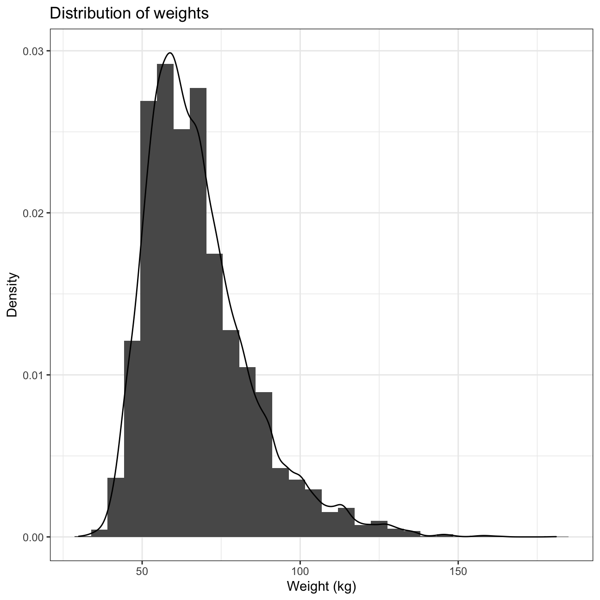
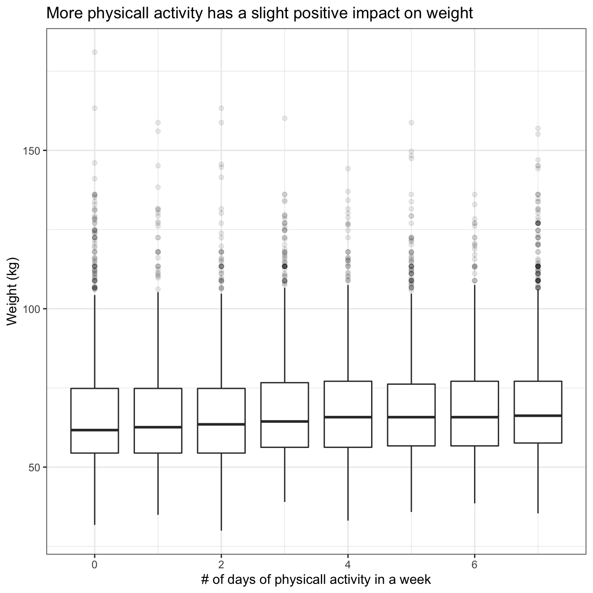
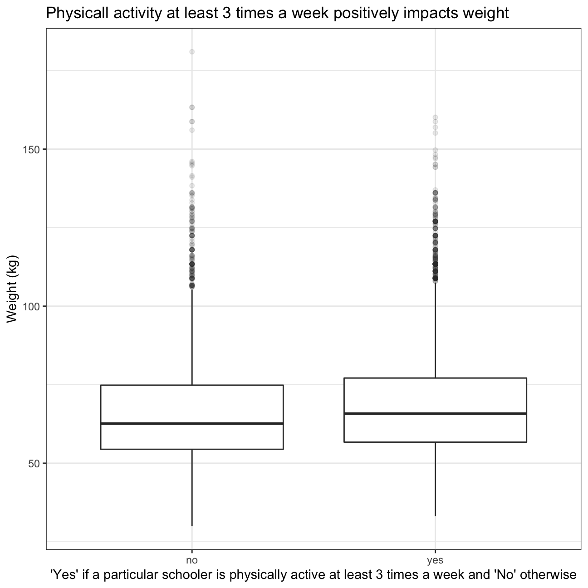
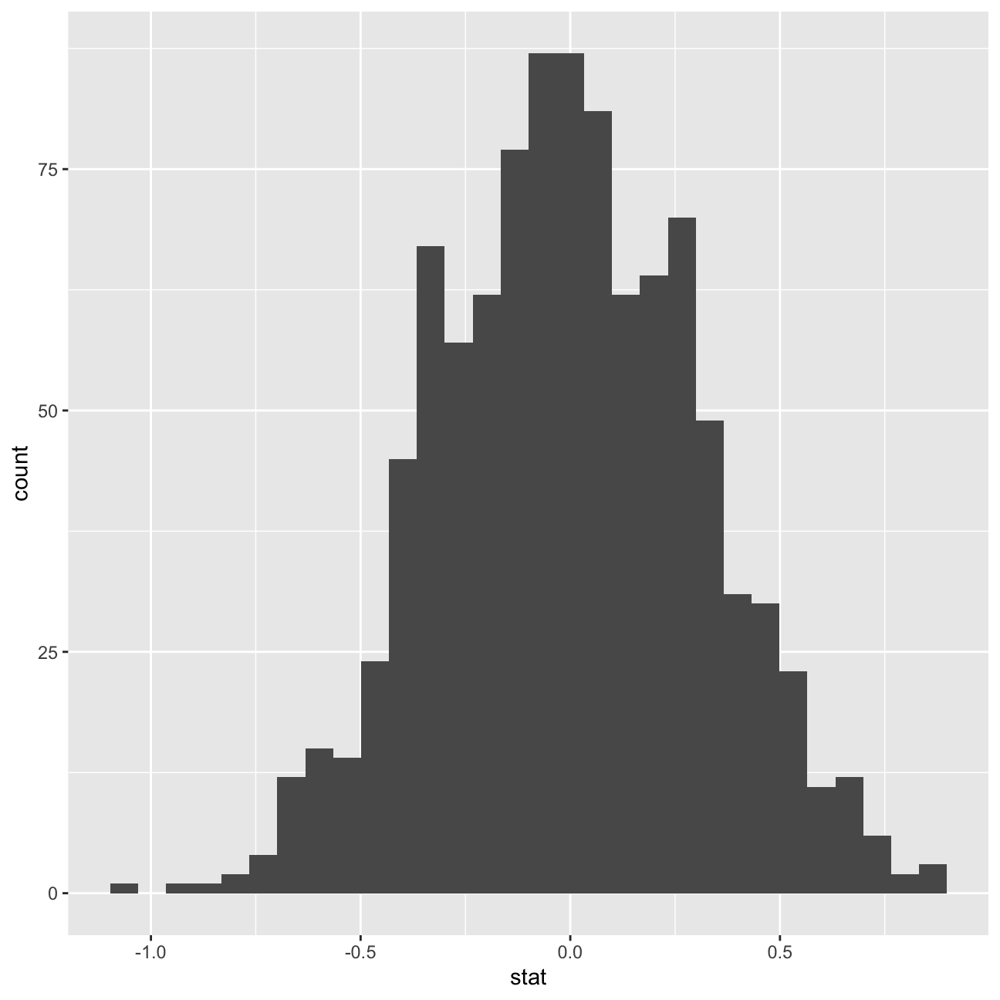
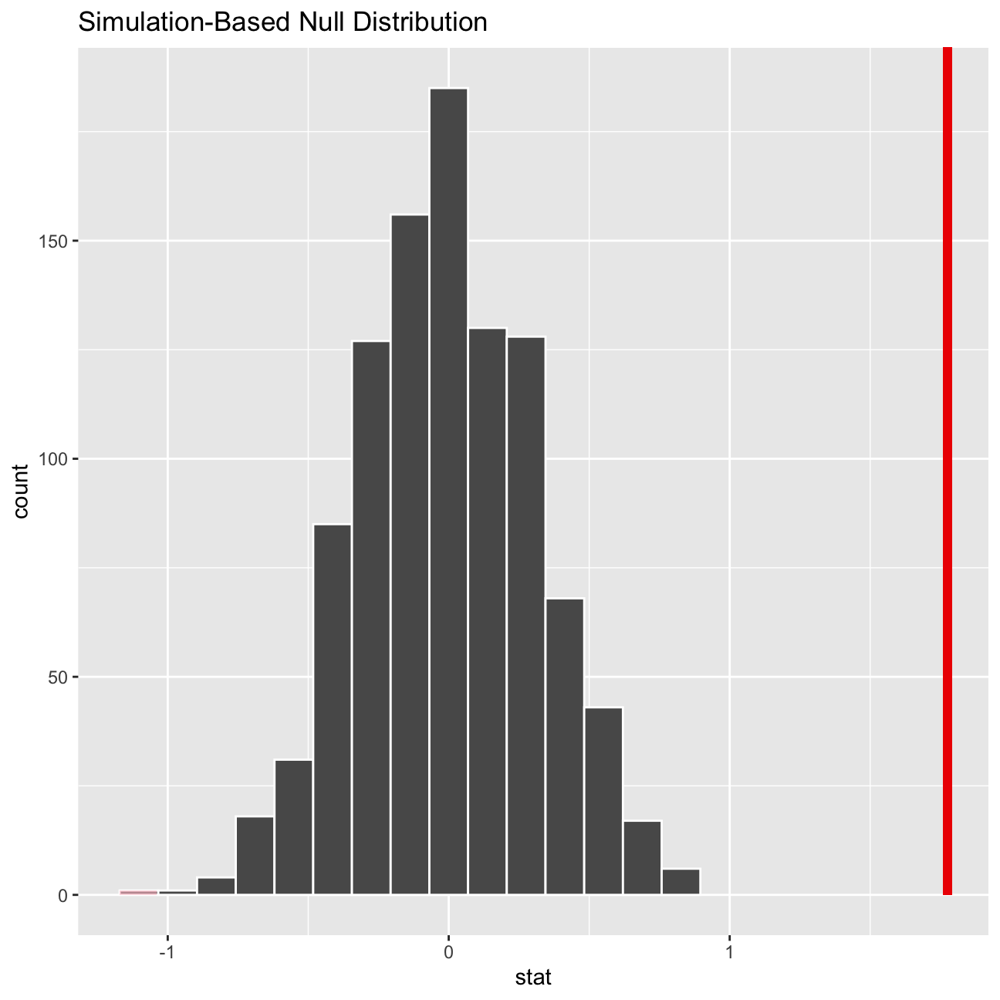

Every two years, the Centers for Disease Control and Prevention conduct the Youth Risk Behavior Surveillance System (YRBSS) survey, where it takes data from high schoolers (9th through 12th grade), to analyze health patterns.
This data is part of the openintro textbook and we can load and inspect it. There are observations on 13 different variables, some categorical and some numerical.
data(yrbss)
glimpse(yrbss)## Rows: 13,583
## Columns: 13
## $ age <int> 14, 14, 15, 15, 15, 15, 15, 14, 15, 15, 15, …
## $ gender <chr> "female", "female", "female", "female", "fem…
## $ grade <chr> "9", "9", "9", "9", "9", "9", "9", "9", "9",…
## $ hispanic <chr> "not", "not", "hispanic", "not", "not", "not…
## $ race <chr> "Black or African American", "Black or Afric…
## $ height <dbl> NA, NA, 1.73, 1.60, 1.50, 1.57, 1.65, 1.88, …
## $ weight <dbl> NA, NA, 84.4, 55.8, 46.7, 67.1, 131.5, 71.2,…
## $ helmet_12m <chr> "never", "never", "never", "never", "did not…
## $ text_while_driving_30d <chr> "0", NA, "30", "0", "did not drive", "did no…
## $ physically_active_7d <int> 4, 2, 7, 0, 2, 1, 4, 4, 5, 0, 0, 0, 4, 7, 7,…
## $ hours_tv_per_school_day <chr> "5+", "5+", "5+", "2", "3", "5+", "5+", "5+"…
## $ strength_training_7d <int> 0, 0, 0, 0, 1, 0, 2, 0, 3, 0, 3, 0, 0, 7, 7,…
## $ school_night_hours_sleep <chr> "8", "6", "<5", "6", "9", "8", "9", "6", "<5…We first start with analyzing the weight of participants in kilograms. Using visualization and summary statistics, describe the distribution of weights. How many observations are we missing weights from?
skim(yrbss)| Name | yrbss |
| Number of rows | 13583 |
| Number of columns | 13 |
| _______________________ | |
| Column type frequency: | |
| character | 8 |
| numeric | 5 |
| ________________________ | |
| Group variables | None |
Variable type: character
| skim_variable | n_missing | complete_rate | min | max | empty | n_unique | whitespace |
|---|---|---|---|---|---|---|---|
| gender | 12 | 1.00 | 4 | 6 | 0 | 2 | 0 |
| grade | 79 | 0.99 | 1 | 5 | 0 | 5 | 0 |
| hispanic | 231 | 0.98 | 3 | 8 | 0 | 2 | 0 |
| race | 2805 | 0.79 | 5 | 41 | 0 | 5 | 0 |
| helmet_12m | 311 | 0.98 | 5 | 12 | 0 | 6 | 0 |
| text_while_driving_30d | 918 | 0.93 | 1 | 13 | 0 | 8 | 0 |
| hours_tv_per_school_day | 338 | 0.98 | 1 | 12 | 0 | 7 | 0 |
| school_night_hours_sleep | 1248 | 0.91 | 1 | 3 | 0 | 7 | 0 |
Variable type: numeric
| skim_variable | n_missing | complete_rate | mean | sd | p0 | p25 | p50 | p75 | p100 | hist |
|---|---|---|---|---|---|---|---|---|---|---|
| age | 77 | 0.99 | 16.16 | 1.26 | 12.00 | 15.0 | 16.00 | 17.00 | 18.00 | ▁▂▅▅▇ |
| height | 1004 | 0.93 | 1.69 | 0.10 | 1.27 | 1.6 | 1.68 | 1.78 | 2.11 | ▁▅▇▃▁ |
| weight | 1004 | 0.93 | 67.91 | 16.90 | 29.94 | 56.2 | 64.41 | 76.20 | 180.99 | ▆▇▂▁▁ |
| physically_active_7d | 273 | 0.98 | 3.90 | 2.56 | 0.00 | 2.0 | 4.00 | 7.00 | 7.00 | ▆▂▅▃▇ |
| strength_training_7d | 1176 | 0.91 | 2.95 | 2.58 | 0.00 | 0.0 | 3.00 | 5.00 | 7.00 | ▇▂▅▂▅ |
yrbss %>% filter(!is.na(weight)) %>%
ggplot(aes(x=weight))+
geom_histogram(aes(y=..density..))+
geom_density()+
theme_bw()+
labs (
title= "Distribution of weights",
x = "Weight (kg)",
y = "Density"
)+
NULL
The distribution of weights is heavily right skewed. Additionally, mean and median are different as well as not quite symmetricall lower and upper quartiles.
We are missing 1004 observations for the variable “weight”.
Next, we consider the possible relationship between a high schooler’s weight and their physical activity. Plotting the data is a useful first step because it helps us quickly visualize trends, identify strong associations, and develop research questions.
ggplot(yrbss,aes(x=physically_active_7d,y=weight,na.rm=TRUE))+
geom_boxplot(aes(group = cut_width(physically_active_7d, 0.25)), outlier.alpha = 0.1)+
labs (
title= "More physicall activity has a slight positive impact on weight",
x = "# of days of physicall activity in a week",
y = "Weight (kg)"
)+
theme_bw()+
NULL
Let’s create a new variable physical_3plus, which will be yes if they are physically active for at least 3 days a week, and no otherwise.
yrbss <- yrbss %>%
mutate(physical_3plus = ifelse(physically_active_7d >= 3, "yes", "no"))
yrbss %>% filter(!is.na(physical_3plus)) %>%
group_by(physical_3plus) %>%
summarise(count = n()) %>%
mutate(prop= count/sum(count))## # A tibble: 2 x 3
## physical_3plus count prop
## <chr> <int> <dbl>
## 1 no 4404 0.331
## 2 yes 8906 0.669Can you provide a 95% confidence interval for the population proportion of high schools that are NOT active 3 or more days per week?
formula_CI <- yrbss %>%
filter(!is.na(physical_3plus)) %>%
summarise(count_no=count(physical_3plus=="no"),
total=n(),
proportion_no=count_no/total,
lower_95_CI_no=proportion_no-1.96*sqrt(
(proportion_no*(1-proportion_no))/total),
upper_95_CI_no=proportion_no+1.96*sqrt(
(proportion_no*(1-proportion_no))/total))
formula_CI[4:5]## # A tibble: 1 x 2
## lower_95_CI_no upper_95_CI_no
## <dbl> <dbl>
## 1 0.323 0.339Let’s show a boxplot of physical_3plus vs. weight. Is there a relationship between these two variables? What did you expect and why?
yrbss %>%
filter(!is.na(physical_3plus)) %>%
ggplot(aes(x=physical_3plus,y=weight))+
geom_boxplot(outlier.alpha = 0.1)+
labs (
title= "Physicall activity at least 3 times a week positively impacts weight",
x = "'Yes' if a particular schooler is physically active at least 3 times a week and 'No' otherwise",
y = "Weight (kg)"
)+
theme_bw()+
NULL
I expected that being physically active at least 3 times a week will result in a lower weight as one would burn more calories, but from the graph it is evident that more physicall activity is positively correlated with weight.
Boxplots show how the medians of the two distributions compare, but we can also compare the means of the distributions using either a confidence interval or a hypothesis test.
yrbss %>%
group_by(physical_3plus) %>%
filter(!is.na(physical_3plus)) %>%
summarise(mean_weight = mean(weight, na.rm = TRUE),
sd_weight = sd(weight, na.rm=TRUE),
count = n(),
se_weight = sd_weight/sqrt(count),
t_critical = qt(0.975, count-1),
margin_of_error = t_critical * se_weight,
lower = mean_weight - t_critical * se_weight,
upper = mean_weight + t_critical * se_weight
)## # A tibble: 2 x 9
## physical_3plus mean_weight sd_weight count se_weight t_critical
## <chr> <dbl> <dbl> <int> <dbl> <dbl>
## 1 no 66.7 17.6 4404 0.266 1.96
## 2 yes 68.4 16.5 8906 0.175 1.96
## # … with 3 more variables: margin_of_error <dbl>, lower <dbl>, upper <dbl>There is an observed difference of about 1.77kg (68.44 - 66.67), and we notice that the two confidence intervals do not overlap. It seems that the difference is at least 95% statistically significant. Let us also conduct a hypothesis test.
Write the null and alternative hypotheses for testing whether mean weights are different for those who exercise at least times a week and those who don’t.
Null hypotheses: true difference in mean weights for high schoolers who exercise at least 3 times a week and those who don’t is equal to 0
Alternative hypotheses: true difference in mean weights is not equal to 0
t.test(weight ~ physical_3plus, data = yrbss)##
## Welch Two Sample t-test
##
## data: weight by physical_3plus
## t = -5, df = 7479, p-value = 9e-08
## alternative hypothesis: true difference in means is not equal to 0
## 95 percent confidence interval:
## -2.42 -1.12
## sample estimates:
## mean in group no mean in group yes
## 66.7 68.4p-value is very close to 0. Thus, we reject the Null and confirm that true difference in mean weights is not equal to 0
inferWe need to initialize the test, which we will save as obs_diff.
obs_diff <- yrbss %>%
specify(weight ~ physical_3plus) %>%
calculate(stat = "diff in means", order = c("yes", "no")) After we have initialized the test, we need to simulate the test on the null distribution, which we will save as null.
null_dist <- yrbss %>%
specify(weight ~ physical_3plus) %>%
hypothesize(null = "independence") %>%
generate(reps = 1000, type = "permute") %>%
calculate(stat = "diff in means", order = c("yes", "no"))We can visualize this null distribution with the following code:
ggplot(data = null_dist, aes(x = stat)) +
geom_histogram()
Now that the test is initialized and the null distribution formed, we can visualise to see how many of these null permutations have a difference of at least obs_stat of 1.77?
We can also calculate the p-value for your hypothesis test using the function infer::get_p_value().
null_dist %>% visualize() +
shade_p_value(obs_stat = obs_diff, direction = "two-sided")
null_dist %>%
get_p_value(obs_stat = obs_diff, direction = "two_sided")## # A tibble: 1 x 1
## p_value
## <dbl>
## 1 0p-value is very close to 0. Thus, we reject the Null and confirm that true difference in mean weights is not equal to 0, so being physically active at least 3 times a week has an effect on weight